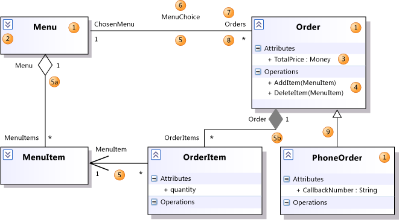
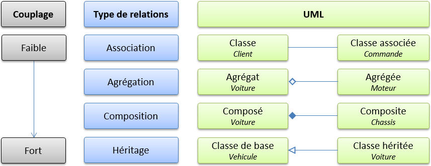
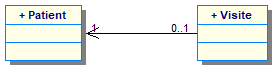
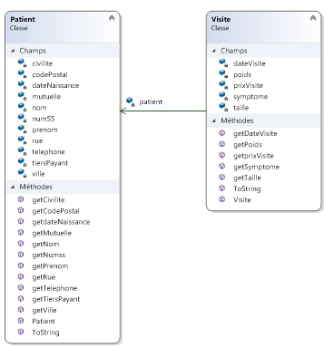
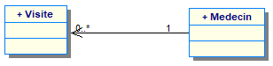
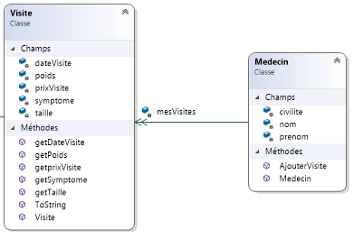

Lecture des diagrammes de classes
source microsoft

| Numéro |
Élément |
Description |
| 1 |
Classe |
Définition d'objets qui partagent des caractéristiques structurelles ou comportementales données. |
| 1 |
Classifieur |
Nom général d'une classe, d'une interface ou d'une énumération. Les composants, les cas d'usage et les acteurs sont également des classifieurs. |
| 2 |
Contrôle Réduire / Développer |
Si vous ne pouvez pas voir les détails d'un classifieur, cliquez sur l'Expander dans la partie supérieure gauche du classifieur. |
| 3 |
Attribut |
Valeur typée attachée à chaque instance d'un classifieur. |
| 4 |
Opération |
Méthode ou fonction qui peut être exécutée par des instances d'un classifieur. |
| 5 |
Association |
Relation entre les membres de deux classifieurs. |
| 5a |
Aggregation |
Association représentant une relation de propriété partagée. La propriété Aggregation du propriétaire du rôle a sa valeur partagé. |
| 5b |
Composition |
Association représentant une relation de partie entière. La propriété agrégation du propriétaire rôle a sa valeur Composée |
| 6 |
Nom de l’association |
Nom d'une association. |
| 7 |
Nom du rôle |
Nom d'un rôle, autrement dit une extrémité d'une association. Peut être utilisé pour faire référence à l'objet associé. Dans l'illustration précédente, pour toute commande O, O.ChosenMenu est son Menu associé.
Chaque rôle possède ses propres propriétés, répertoriées sous les propriétés de l'association. |
| 8 |
Multiplicité |
Indique combien des objets à cette extrémité peuvent être liés à chaque objet à l'autre extrémité. Dans l'exemple, chaque commande doit être liée à exactement un menu.
\* signifie qu’il n’existe aucune limite supérieure au nombre de liens qui peuvent être apportées. |
| 9 |
Généralisation |
Le spécifique classifieur hérite une partie de sa définition à partir de la général classifieur. Le classifieur général se trouve à l'extrémité fléchée du connecteur. Les attributs, associations et opérations sont hérités par le classifieur spécifique. |
Dépendances entre les classes
source James RAVAILLE
En conception et programmation orientée objet, il existe différentes manières « d’associer » les classes entre elles :

L’association
L’association entre deux classes permet d’indiquer qu’une classe est en liaison avec une autre. Par exemple, si un client peut passer des commandes, alors il est nécessaire d’associer les classes Client et Commande, afin de pouvoir connaître les commandes d’un client et le client d’une commande.
L’agrégation
L’agrégation indique une relation d’appartenance entre l’agrégé et l’agrégat. La destruction de l’agrégat en mémoire n’entraîne pas la suppression de l’agrégé. Par exemple, la voiture possède un moteur. Lorsque la voiture est détruite, alors le moteur peut être conservé pour être associé à une autre voiture.
La composition
La relation étant plus forte, l’agrégation indique une relation d’appartenance forte entre l’agrégé et l’agrégat. La destruction l’agrégat en mémoire entraîne la suppression de l’agrégé. Par exemple, lorsque la voiture est détruite, le châssis l’est aussi.
L’héritage
La classe héritée spécialise la classe de base. Une voiture est un véhicule particulier. La classe Voiture hérite de la classe Vehicule appelée classe de base. La classe Voiture peut proposer propriétés et services supplémentaires et redéfinir des membres de la classe Vehicule.
Multiplicité
Définition
Définir le nombre d'instances de l'association pour une instance de la classe.
Il s'agit d'un nombre entier ou d'un intervalle de valeurs.
| Cardinalité |
Sens |
| 1 |
Une et une seule instance (par défaut) |
| 0..1 |
Zéro ou une instance |
| m..n |
De m à n instance |
| * |
De zéro à plusieurs instances |
| 1..* |
De 1 à plusieurs instances |
| n |
Exactement n instances |
En UML, elle est :
- notée avec le rôle,
- par défaut 1 (non notée),
- sans précisions elle est bidirectionnelle.
Interprétation des modèles UML : les relations 1,1
Prenons l'exemple d'une application qui enregistre les visites d'un cabinet de plusieurs médecins.
Considérons le schéma UML suivant :

- Un patient a eu 0 ou une visite
- une visite concerne un patient
Ceci donne pour le modèle objet, la situation suivante :

A partir d'une instance de classe Visite, il est possible d'accéder à un patient. Par contre à partir d'une instance de classe patient rien ne permet de retrouver la visite qui a été effectuée
Définition
Une association navigable dans un seul sens est une association unidirectionnelle.
Au niveau du code nous avons une référence Patient dans la référence Visite :
public class Visite
{
private Patient patient;
// ...
}
Pour réaliser ce lien (c.a.d. valoriser le champ privé patient dans la classe Visite), deux solutions :
- A la construction d’une visite
public Visite(…,…,…, Patient p)
{
this.patient = p;
// ...
}
- Avec un setter après la construction
public void setPatient(Patient p)
{
this.patient = p;
}
Interprétation des modèles UML : les relations 1,n
Reprenons l'exemple d'une application qui enregistre les visites d'un cabinet de plusieurs médecins. Nous allons maintenant tenir compte du nombre de visites faites par un médecin.
Considérons le schéma UML suivant :

- Un médecin a fait aucune ou plusieurs visites
- une visite concerne un médecin
Ceci donne pour le modèle objet, la situation suivante :

L'association est navigable du médecin vers les visites. Il y aura donc plusieurs références à Visite dans la classe Medecin, mais pas de référence à Medecin dans la classe Visite.
L'attribut ajouté dans Medecin doit permettre de stocker un nombre quelconque d'instances de Visite.
Deux solutions s'offrent à nous, soit les instances de Visites sont stockées dans un tableau, soit elles e sont dans une liste.
Le stockage dans un tableau :
public class Medecin
{
private Visite[] mesVisites = new Visite[100];
// ...
}
L'inconvénient du stockage dans un tableau c'est qu'il faut connaître à l'avance sa taille ou prévoir des modifications pour l'augmenter en cas de besoin.
Voila pourquoi, on préférera la liste typée pour stocker les informations.
Dans la déclaration, on spécifiera le nom de la classe des objets que contiendra la liste typée.
public class Medecin
{
// Déclaration de la liste typée
private Liste<Visite> mesVisites;
// ...
}
L'instanciation peut se faire n'importe où dans la classe, mais il est plus pratique de la faire dans le constructeur.
public Medecin(...,...,...)
{
this.mesVisites = new Liste<Visite>();
// ...
}
Les listes typées
La déclaration et l'instanciation des listes typées sont faites dans le paragraphe précédent.
La liste typée fournit de nombreux services :
- Retourner le nombre d’éléments :
Count
- Ajout : méthode
Add
- Suppression d’un élément :
Remove
- Suppression d’un élément par son indice :
RemoveAt
- Suppression de tous les éléments :
Clear
- Insertion à un rang :
Insert
- De nombreux autres services ...
Pour ajouter un nouvel élément lorsque celui-ci est déjà construit :
public void ajouterVisite(Visite v)
{
this.mesVisites.Add(v);
}
Pour ajouter un nouvel élément lorsque celui-ci n'est pas construit :
public void ajouterVisite(...,...,...)
{
Visite v = new Visite(...,...,...);
this.mesVisites.Add(v);
}
Boucle de parcours d’une liste
On peut utiliser une boucle particulière dans le cas où on parcourt tous les éléments :
foreach(Visite v in this.mesVisites)
{
Console.WriteLine (v.ToString());
}
Ici, la boucle va lire chaque objet de la liste mesVisites et l'inclure dans l'objet v
pour en extraire la méthode ToString